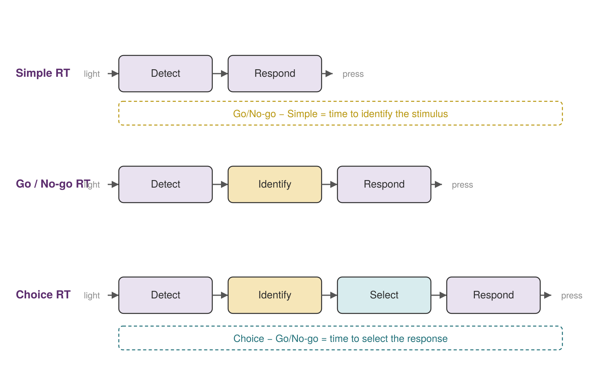
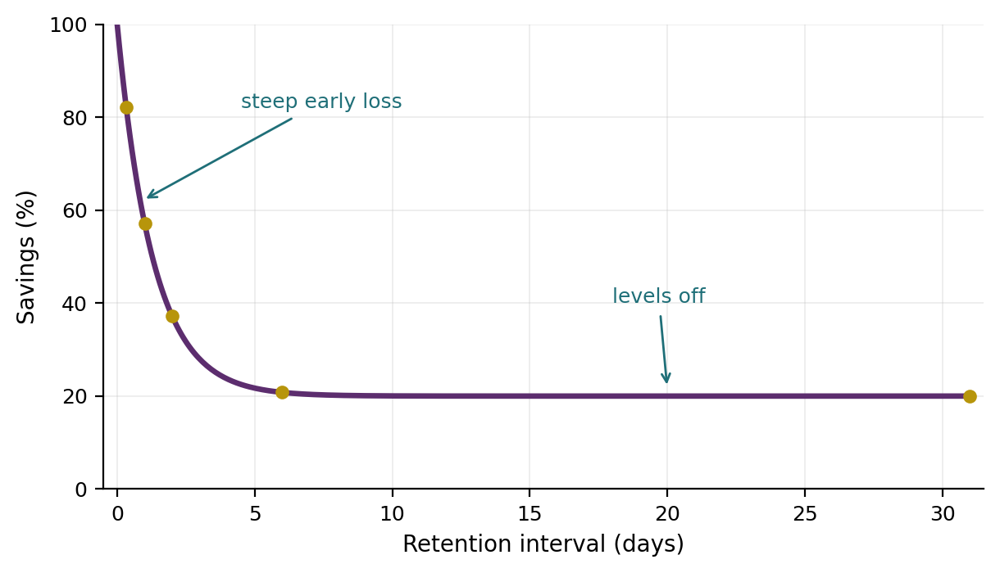
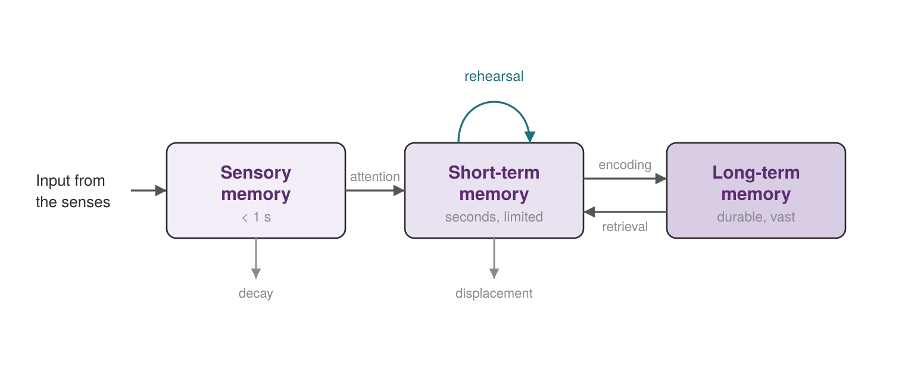
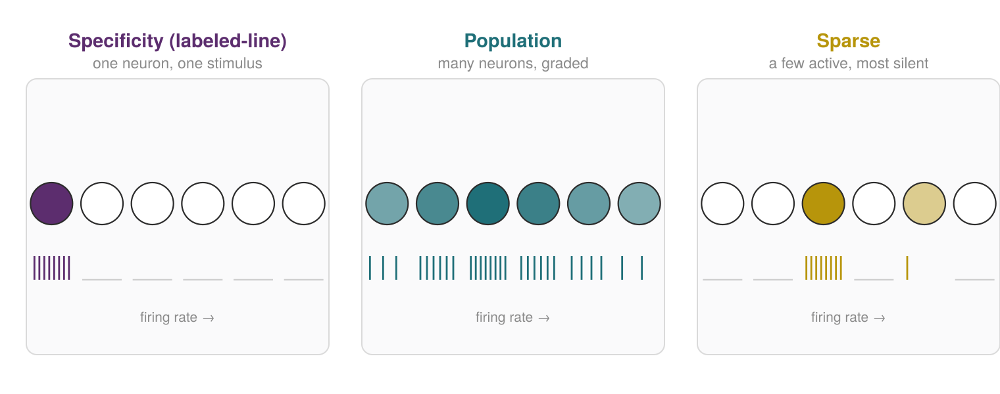
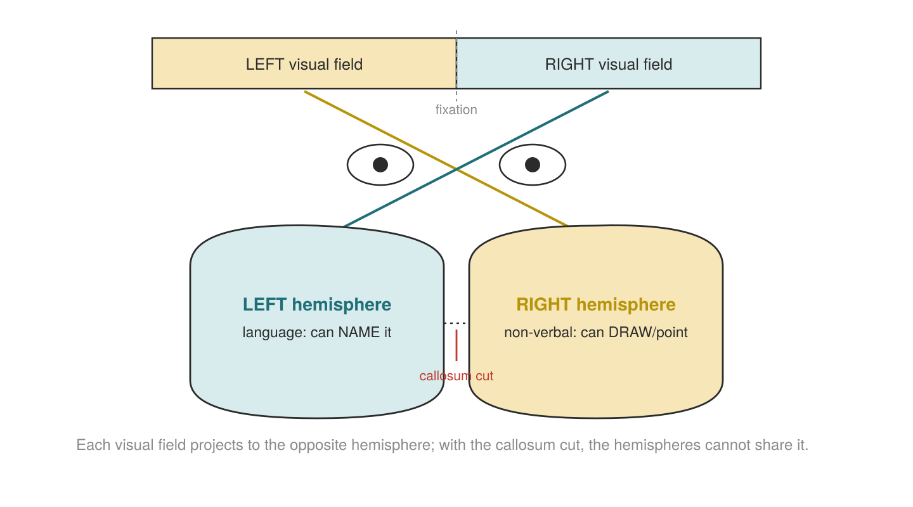

Chapter 1
Introduction & Cognitive Neuroscience
Where this chapter sits
We will begin this chapter with a word on what the whole unit is trying to do. Cognitive psychology is the scientific study of mental processes: attention, memory, perception, language, problem-solving, decision-making, and thinking. We study these things because behaviour on its own only takes you so far. If you want to understand why people act as they do, you eventually have to say something about the machinery that produces the behaviour. That machinery is the brain, together with the representations it builds of the world.
Two claims run through the entire unit and are worth stating clearly from the outset. First, the mind controls a set of distinct mental processes, and those processes are what we spend most of the unit trying to understand. Second, the mind works by creating representations of the world that allow us to function within it. Almost everything that follows is a variation on those two ideas.
This first chapter brings together two things that are often taught separately: the history of the field and the neuroscience that underpins it. That is deliberate. The history explains why cognitive psychology exists at all and why it takes the form it does; the neuroscience explains what the mind is running on. Keeping them together stops the physiology from being quarantined into a box you can safely ignore before the exam. It cannot be ignored. Throughout the unit, physiology is woven into the account of every process rather than bolted on at the end.
Learning objectives
1.1 Studying the mind
Philosophers have wondered about the mind at least as far back as Socrates. The scientific study of mental processes, however, is recent. What changed was not the questions but the tools: experimental methods that let researchers measure something about the mind rather than merely argue about it. The intellectual precursors sit in philosophy and physiology. Philosophers such as John Locke (1632–1704) and David Hume (1711–1776) argued for empiricism, the idea that all knowledge comes from experience, and put the human observer and the senses at the centre of how the mind acquires knowledge (Klein, 2023).
The word cognition comes from the Latin cognoscere, “to know” or “to get to know” (the related cogito means “I think”). It covers the full set of mental abilities related to knowledge: attention, memory, judgement, reasoning, problem-solving, decision-making, and more (Andrade & Walker, 2019). A useful thing to notice straight away is that most of this work is not conscious. You do not experience the vast majority of what your brain is doing as you move through the day. That gap between what the mind does and what you are aware of doing is a theme we will return to constantly.
One idea recurs so often that it is worth naming once and reusing throughout: the split between fast, automatic, unconscious processing and slow, deliberate, conscious processing. Most of what your brain does falls in the first category; only a fraction reaches awareness. We will use the Rider and the Elephant, an analogy developed in the lectures, as shorthand for this dual-system distinction across the unit, in attention, in the difference between working memory and automaticity, and in the biases that shape judgement.
1.2 The rise, fall, and re-emergence of the mind
Donders and the first measurement of a thought (1868)
The Dutch physiologist Franciscus Donders asked a deceptively simple question: how long does it take to make a decision? To answer it he measured reaction time, the interval between a stimulus and a response, across tasks of differing complexity (Klein, 2023). In the version usually taught today, participants in a simple reaction-time task pressed a single button as soon as a light appeared. In a choice reaction-time task, they pressed one button for a right-side light and a different button for a left-side light. In a third, go/no-go task, they responded only to a designated “go” stimulus and withheld their response to “no-go” stimuli.
Donders' reasoning is the part worth learning. The simple task involves sensing the stimulus and executing the motor response. The go/no-go task adds one further operation: identifying which stimulus appeared. The choice task adds another still: selecting which response to make. Because the tasks are built out of the same components plus one extra operation each, the difference in average reaction times estimates the duration of the added operation. This is the subtractive method, also called mental chronometry. Subtracting go/no-go from choice reaction time therefore isolates response selection, while subtracting simple from choice reaction time yields the combined time to identify the stimulus and select the response: what Donders treated as the time taken to decide, on the order of 100 milliseconds.

Wundt, structuralism, and introspection
The formal birth of psychology as a discipline is usually credited to Wilhelm Wundt (1832–1920), a German physician, physiologist, and philosopher who in 1879 established the first laboratory dedicated to psychological research, at the University of Leipzig (Klein, 2023). Wundt treated conscious experience as something that could be studied scientifically. His goal, which his student Edward Titchener later named structuralism, was to identify the basic elements, or “structures”, of experience and to work out how they combine to produce conscious experience (Andrade & Walker, 2019).
His method was introspection, which he called “internal perception”. Trained observers reported their reactions to carefully controlled, repeatable stimuli, with the aim of identifying the components of consciousness. Wundt imposed strict conditions: practised observers, and repeatable stimuli that produced the same experience each time. Even so, the method never delivered agreement between observers. Introspection is subjective, and there is no way to verify from the outside that a person is reporting their own mental contents accurately. Structuralism fell out of favour after the death of Wundt's student Edward Titchener in 1927. Connect this back to the previous section: if most cognition is unconscious, asking people to introspect on it was always going to have a low ceiling.
James and functionalism
William James (1842–1910), the first American psychologist, took a different line. Persuaded by Darwin, James argued that psychology's job was to study the function of behaviour, how mental activities help an organism adapt to its environment, rather than to catalogue the static contents of consciousness (Andrade & Walker, 2019). This is functionalism, and it cared about the operation of the whole mind rather than its individual parts. James allowed a role for introspection but also leaned on more objective measures, including anatomy and physiology. The functionalist instinct (ask what a process is for, and how it helps the organism cope) is one many researchers share and one you will see us return to.
Ebbinghaus and the measurement of forgetting
Hermann Ebbinghaus (1850–1909) did for memory what Donders did for decision-making: he made it measurable. Serving as his own and only participant, he memorised lists of nonsense syllables (DIF, LAJ, LEQ, MUV, and so on), deliberately meaningless so that prior knowledge could not help him (Andrade & Walker, 2019; Ebbinghaus, 1885/1913). He then measured how much he retained after various delays.
The elegant part is how he quantified memory. Rather than counting what he could recall, Ebbinghaus measured savings: the time needed to learn a list originally, minus the time needed to relearn it after a delay. If relearning is faster, something was retained. Plotting savings against the retention interval gives the savings curve, better known as the forgetting curve. Its shape is the finding: forgetting is rapid at first and then levels off. Ebbinghaus also identified the spacing effect: distributed practice produces better retention than the same amount of study massed together. The practical implication for your own study habits is obvious, and it is not cramming.

Behaviourism: the mind is thrown out
Early in the twentieth century, behaviourism became the dominant force in American psychology. Championed by John B. Watson (1878–1958) and later B. F. Skinner (1904–1990), it rejected any reference to the mind and insisted that only overt, observable behaviour was a proper subject for science (Klein, 2023). The hope was to derive laws of learning that would allow behaviour to be predicted and controlled. Watson's objection to introspection was blunt and, frankly, fair: it produced extremely variable results, and its focus on invisible inner processes made results impossible to verify.
Two learning mechanisms did most of the work. Classical conditioning, studied by the Russian physiologist Ivan Pavlov (1849–1936), explains how a neutral stimulus comes to trigger a response through association: Pavlov's dogs salivating to a sound such as a metronome, and many of our emotional and “gut” reactions besides (Andrade & Walker, 2019). Operant conditioning, formalised by Skinner from Thorndike's law of effect, explains how behaviours are strengthened or weakened by their consequences: a reinforcer makes a behaviour more likely to recur, a punisher less likely. These are genuinely powerful mechanisms. The problem is not that behaviourism was wrong about conditioning; it is that it declared the mind off-limits, and that turned out to be untenable.
Tolman: the mind sneaks back in
Behaviourism did not collapse all at once, and one of the earliest cracks came from inside the study of learning. Edward Tolman placed hungry rats in a maze with no reward and, alongside them, a comparison group that was rewarded with food at the end (Spielman et al., 2020; Tolman & Honzik, 1930). The unreinforced rats appeared to be doing nothing useful, yet as they explored, they were building what Tolman (1948) called a cognitive map: a mental representation of the layout of the maze. After ten sessions without any reinforcement, food was placed in the goal box. As soon as those rats found it, they navigated the maze quickly, just as quickly as the group that had been rewarded all along.
This is latent learning: learning that has occurred but is not visible in behaviour until there is a reason to demonstrate it. The finding is awkward for strict behaviourism, because the learning happened without reinforcement and stayed hidden until motivation revealed it. What the rats had acquired was an internal representation, not a chain of reinforced stimulus–response links. Hold on to that phrase: internal representation. It is the thing behaviourism had ruled out of bounds, and it is exactly what the next shift in the field put back at the centre.
The cognitive revolution
By the 1950s, developments in linguistics, neuroscience, and computer science revived interest in the mind as a legitimate object of study (Klein, 2023). This is the cognitive revolution. In 1967 Ulric Neisser published the first textbook titled Cognitive Psychology, which named and consolidated the field. No single person started the revolution, but Noam Chomsky (1928–) was decisive.
Chomsky's target was Skinner's account of language. Skinner (1957) held that children acquire language through operant conditioning: they imitate the speech they hear, and correct speech is reinforced. Chomsky (1959) argued this could not be the whole story. Children produce sentences they have never heard and so cannot be imitating, and they produce grammatical errors that were never reinforced. Language, Chomsky concluded, must rest on an inborn biological endowment: what he called the language acquisition device (LAD), an innate sensitivity to grammatical structure that lets children organise the language they hear (Andrade & Walker, 2019). The debate is not fully settled, since some typologists argue that surveys of the world's languages have failed to find features that are truly universal (Evans & Levinson, 2009), but Chomsky's argument made the point that mattered: you cannot explain behaviour this complex without talking about internal, mental structure.
1.3 The information-processing approach
With the mind back on the table, psychologists needed a way to talk about it. The information-processing approach provided one, borrowing its central metaphor from the digital computer: the mind takes in information, transforms it through a series of stages, and produces output. To understand a complex cognitive behaviour you measure observable behaviour, make inferences about the underlying cognitive activity, and ask what that behaviour tells you about how the mind works. This is Donders' logic, generalised into a whole framework.
Machines that think, and the birth of the flow diagram
The computer metaphor was not merely decorative; it arrived with a research programme attached. In 1955 a small group of mathematicians and engineers proposed a summer workshop, held at Dartmouth College in 1956, to study the conjecture that learning and intelligence could be described precisely enough for a machine to simulate them. The proposal defined artificial intelligence as the problem of making a machine behave in ways that would be called intelligent if a human were so behaving (McCarthy et al., 1955/2006). Within months Allen Newell, Herbert Simon, and J. C. Shaw had a working demonstration: the Logic Theorist, a program that proved theorems in symbolic logic not by exhaustive search but by applying a small set of strategies (substitution, detachment, chaining) to work backwards from a goal towards known axioms (Newell & Simon, 1956). Its internal machinery was built from primitive operations for storing, copying, and comparing symbolic expressions held in a working memory (Newell et al., 1957; see also Newell, 1990).
Why should psychologists have cared? Because the Logic Theorist made a philosophical point in the most concrete way available: here was a physical system that manipulated symbols and thereby did something that had always been described as thinking. If a machine could be said to have goals, strategies, and a limited working memory, then those terms were not unscientific mysticism, and there was no principled reason to refuse them when describing a person. Behaviourism had rejected mental terms as unobservable; the computer showed that unobservable internal states could nevertheless be specified precisely, implemented, and tested. Notice also what the programmers needed in order to describe their own machine: a diagram of labelled stages with arrows between them, showing information passing from input to store to processor to output. That diagram is the direct ancestor of the box-and-arrow models that fill the rest of this textbook.
Cherry, Broadbent, and the filter
The first great success of the new framework was in attention, and it began with a practical puzzle. How do you follow one voice at a party while a dozen others are talking? Colin Cherry (1953), an electrical engineer working on speech recognition, set out to make this measurable, what he called the cocktail party problem, and framed it in deliberately engineering terms: on what logical basis could one design a machine, a filter, that would perform the separation?
Cherry ran two kinds of test, and the contrast between them is the whole finding. In the first, he recorded two different messages spoken by the same speaker onto a single tape, so that the listener could not use voice, pitch, accent, or direction to tell them apart. The result was, in his word, a babel, yet listeners could still tease the messages apart, given enough effort. The effort was considerable: the subject reported very great difficulty, shut his eyes to concentrate, and replayed some phrases ten or twenty times before committing to an answer. Crucially, he made errors in a revealing pattern, recovering whole phrases rather than isolated words and producing mistakes that were plausible continuations of the sentence. Cherry argued that recognition therefore draws on a stored body of transition probabilities, knowledge of which words are likely to follow which, and confirmed this by constructing a pair of messages built entirely from clichés, whose internal predictability was high but whose junctions were arbitrary. Those messages could not be separated at all: the listener read out complete clichés drawn in roughly equal numbers from both speeches.
In the second kind of test (the one that became the standard laboratory task, now known as dichotic listening) Cherry fed one continuous message to the listener's left ear through a headphone and a different message to the right. Here the difficulty vanished. Listeners could attend to either message at will and reject the other; recognition, as Cherry put it, could apparently be switched to either ear at will. The comparison between the two experiments localises the problem precisely. Separating two voices is hard when they share a channel and easy when they arrive on physically distinguishable ones. Selection, in other words, seems to operate on simple physical properties of the signal (which ear, which pitch) rather than on meaning.
Donald Broadbent (1958) turned that conclusion into a model. In Perception and Communication he proposed that the nervous system has a limited capacity for processing and must therefore manage a bottleneck: incoming messages are held very briefly in a sensory store, a filter selects one of them on the basis of its physical characteristics, and only the selected message passes to a detector for the analysis of meaning and on into memory. Everything else is blocked before it is ever identified. Because selection happens before meaning is extracted, this is called an early-selection model.
Broadbent's model matters for three reasons beyond attention itself. First, it is the clearest early demonstration that you can write down a specific, falsifiable architecture for an unobservable mental process, and be wrong in informative ways: within a few years Treisman (1960) had shown that unattended messages are not blocked outright but attenuated, since listeners follow a meaningful passage when it switches to the rejected ear, and people notice their own name there (Moray, 1959), which forced the filter to be softened into a volume control. That is normal science, and it is only possible because Broadbent committed to a diagram precise enough to fail. Second, it imports the vocabulary of channels, capacity, and bottlenecks from wartime communications engineering directly into psychology. Third, it gives us the first formal statement of a theme that runs through this entire unit: the machinery upstream of awareness handles far more than reaches you. In the language of §1.1, the elephant registers both messages; only one is handed to the rider.
The modal model of memory
The most influential early information-processing model is Atkinson and Shiffrin's (1968) model, usually called the modal model. It proposes three stores through which information flows (Andrade & Walker, 2019). Sensory memory holds a large amount of incoming sensory information very briefly: on the order of a second. Short-term memory holds a few items for about 15–20 seconds without rehearsal and has strictly limited capacity. Long-term memory holds information over long durations with, for practical purposes, unlimited capacity. Information we consciously remember is brought from long-term memory back into short-term memory, and rehearsal is what keeps material active and moves it toward long-term storage.
Sensory memory itself is not one thing. Iconic memory holds visual information for less than a second; echoic memory holds auditory information; haptic memory holds touch. Sperling's (1960) partial-report work established the key properties of iconic memory, large capacity but very rapid decay, by showing that participants could report any cued row of a briefly flashed array, but lost the ability as the cue was delayed. We develop the modal model, sensory memory, and the limits of short-term memory properly in the short-term and working memory chapter; here it is enough to see it as the founding architecture of the information-processing view.

Tulving's types of long-term memory
Long-term memory is not a single store either. Tulving (1972) distinguished episodic from semantic memory, and later proposed procedural memory as a third system (Tulving, 1985); together these distinctions structure much of the later unit (Andrade & Walker, 2019). Explicit (declarative) memory is what you can consciously bring to mind, and it splits into episodic memory (the what, where, and when of events you have personally experienced) and semantic memory: facts and knowledge about the world, detached from any particular experience of learning them. Implicit (non-declarative) memory operates without conscious recollection and includes procedural memory: the memory for skilled actions, such as riding a bike, swimming freestyle, or playing an instrument. As you will see in later chapters, these types are not just a tidy taxonomy: they come apart in the brain, which is strong evidence that they are genuinely distinct.
1.4 The physiology of cognition
Here is my standing view, and the reason physiology runs through this unit: practising psychology without insight into how the brain functions is like planning a trip to the Moon without understanding physics. It is possible, but much harder than it needs to be. So before we can talk sensibly about localisation and networks, we need the anatomy in place.
From neurons to grey and white matter
The nervous system divides into the central nervous system (CNS; the brain and spinal cord) and the peripheral nervous system (PNS; everything else) (Andrade & Walker, 2019). Nervous tissue contains two cell types: glial cells, which support and maintain, and neurons, which do the communicating. A neuron has a cell body (soma), dendrites that receive input from other neurons, and an axon that carries its output to a target.
Regions dense in cell bodies and dendrites look darker and are called grey matter; regions dominated by axons look pale, because axons are insulated by fatty myelin, and are called white matter. The grey matter forms the outer cortex of the brain. Some terminology depends on location, and it is worth getting right: a cluster of cell bodies is a nucleus in the CNS but a ganglion in the PNS; a bundle of axons is a tract in the CNS but a nerve in the PNS. The same retinal axons are called the optic nerve between the eye and the optic chiasm, and the optic tract beyond it, even though, strictly, the optic nerve is part of the CNS, a historical exception to the rule.
The lobes of the brain
The cortex is folded into ridges (gyri) and grooves (sulci), and the deepest groove, the longitudinal fissure, divides it into left and right hemispheres. Each hemisphere has four lobes, each associated with characteristic functions (Andrade & Walker, 2019):
Occipital lobe: the visual processing centre, containing most of the visual cortex; its cells are arranged as a spatial map of the retinal field.
Parietal lobe: integrates sensory information; contains the somatosensory cortex; central to spatial processing, navigation, number, and touch.
Temporal lobe: auditory processing, language comprehension, and the retention of memories; contains the hippocampus.
Frontal lobe: executive functions and motor control, including planning, goal-directed behaviour, weighing consequences, and suppressing socially inappropriate responses. Its most anterior part, the prefrontal cortex, is central to judgement and impulse control.
Each sense has a primary receiving area, and these map straight onto the lobes: vision to the occipital lobe, touch, temperature, and pain to the parietal lobe, hearing to the temporal lobe, with information from different senses combined in association areas. One point of detail is worth fixing in your mind now, because the next section depends on it: Broca's area is in the frontal lobe, not the temporal lobe. It is a speech-production area, and it sits near the motor cortex that drives the muscles of speech. Wernicke's area, which supports comprehension, is the one in the temporal lobe.
Hierarchical and multisensory processing
Perception is not a single snapshot; it is built up in stages. Processing begins at a primary sensory cortex, proceeds to an association area, and finally reaches a multimodal integration area where information from different senses is combined (Andrade & Walker, 2019). This is hierarchical processing: lower areas handle simpler features and higher areas handle progressively more complex ones. A flashed light activates mainly the visual cortex; a flashed face recruits both visual and higher temporal areas. The pay-off is this: most of our experience is multisensory, yet we experience the world as a single seamless whole because the brain integrates across modalities rather than presenting them separately.
Sensory coding
If perception is built up across a hierarchy, we need to ask how a stimulus is represented by neurons in the first place. There are several coding schemes, and two are common across the sensory systems (Henley, 2021). In the first, one cell encodes one type of sensory quality: the neuron is specifically tuned to a single stimulus, so activating it produces that sensation regardless of how the receptor was stimulated. Pain is the clean example: activate a pain receptor and you feel pain; loss-of-function mutations in a sodium channel (Nav1.7) concentrated in pain-sensing neurons abolish pain while leaving touch intact. In the second, a single cell responds to more than one value of a stimulus, and it is the combined pattern of firing across many cells that yields the percept. Colour vision works this way: each cone is most sensitive to one part of the spectrum but responds across a range, so the full spectrum is recovered only from the population response.
A third scheme sits between these two. Under sparse coding, a stimulus is represented by the firing of only a small subset of the available neurons while the great majority stay silent (Olshausen & Field, 2004). It is not the one-cell-one-quality of strict specificity coding, because a small group rather than a single cell carries the message; but nor is it full population coding, because most of the population contributes nothing. This is where an old question resurfaces: could there be a single cell that fires for your grandmother and nothing else? Strict specificity coding at that level of complexity is implausible (you would need a dedicated cell for every recognisable thing, and losing one cell would cost you a concept), but recordings in higher visual and medial temporal areas do find cells with strikingly narrow preferences for particular objects, faces, and places (Quian Quiroga et al., 2005). Sparse coding is the middle position that survives: not one cell per concept, but far fewer than the whole population. Olshausen and Field argue that sparseness may be advantageous because it increases associative-memory capacity, makes the structure of natural signals explicit, eases read-out at later stages, and saves metabolic energy.

1.5 Localisation of function
The organising claim of this section is simple: specific functions are served by specific areas of the brain, and cognitive functioning declines in specific, predictable ways when particular areas are damaged. The strongest evidence for localisation is the double dissociation, and language provides the classic case.
The Broca–Wernicke double dissociation
Damage to Broca's area, in the frontal lobe, impairs the production of speech: patients largely understand everyday language but their own speech is halting and effortful (Broca's aphasia). Damage to Wernicke's area, in the temporal lobe, impairs comprehension: patients speak fluently but the words carry little meaning (Wernicke's aphasia) (Andrade & Walker, 2019). This pairing is a double dissociation, and it is a genuinely strong argument. If production can be lost while comprehension is spared, and comprehension lost while production is spared, then the two are not the same function riding on one shared mechanism: they are separable, and they are localised. A single dissociation would not license that conclusion; the double dissociation does.
Splitting the brain in two
The two hemispheres communicate through the corpus callosum, a broad band of roughly 200 million axons (Andrade & Walker, 2019). In some cases of severe epilepsy, surgeons sever it to stop seizures spreading, producing so-called split-brain patients. Gazzaniga, Bogen, and Sperry (1962) studied such patients and exploited a fact of wiring: input from the left visual field goes to the right hemisphere, and vice versa, and in most people language is a left-hemisphere function.
When an image was flashed to a split-brain patient's left visual field (right hemisphere), the patient could not name it (the verbal left hemisphere never received it) but could pick out or draw the object with the left hand, which the right hemisphere controls. Flash the same information to the right visual field (left hemisphere) and the patient could read and name it easily. This is lateralisation made visible: the left hemisphere dominates language and sequential tasks; the right excels at spatial and perceptual tasks such as recognising faces and patterns. The caution matters, though: we normally use both hemispheres together, and it is easy to overstate the split.

Lesions, and what damage teaches us
Much of what we know about localisation comes from studying people whose brains have been damaged: the domain of neuropsychology. A stroke that destroys a small, well-defined region lets researchers link the resulting deficit to that region. The most-cited case is Phineas Gage, the railway worker who in 1848 survived an iron rod driven through his prefrontal cortex but whose personality, according to his doctor and friends, changed markedly afterwards (Harlow, 1868), consistent with the prefrontal cortex's role in judgement, planning, and impulse control (Andrade & Walker, 2019). One ethical point follows directly. We cannot inflict brain damage to study it, which is exactly why these natural cases are so valuable; and the same ethical limit is one of the reasons the field leans so heavily on the controlled experiment, which we return to in §1.7.
Face recognition gives another localised example: damage to face-selective tissue in the temporal cortex produces prosopagnosia, the inability to recognise faces despite otherwise intact vision (Andrade & Walker, 2019).
1.6 From localised areas to networks
Localisation is true but incomplete. Alongside it sits a complementary fact: most functions are processed by many areas working together, because most experience is multisensory. These two ideas look as though they conflict, but they do not. The resolution is to think in terms of networks: interconnected areas that communicate with one another (Andrade & Walker, 2019).
The foundational idea is Donald Hebb's (1949), usually compressed to “cells that fire together wire together”. Neural units that are repeatedly co-activated strengthen their connections; connections that fall into disuse weaken. Connectionist and parallel distributed processing (PDP) models build on this, treating memory and cognition as patterns distributed across networks of simple units, with each connection carrying a weight that reflects its strength. A memory, on this view, is not stored in one place; it is a pattern of connection strengths across many units operating in parallel. This is why localisation and distributed processing are complementary rather than contradictory: a function can depend on a particular region and still be realised across a network that includes it.
If cognition runs on networks, then a map of the wiring becomes a basic scientific requirement. That map is the connectome, a term proposed by Sporns, Tononi, and Kötter (2005), who argued that a systematic description of which neural elements connect to which would be an indispensable foundation for neurobiological research and noted that no such map then existed for the human brain. Their strategy was to trace white-matter pathways with diffusion-weighted imaging and tractography, then correlate activity across regions to see which anatomical links are functionally live. This yields two distinct senses of connectivity, and keeping them apart is the conceptual work of this section. Structural connectivity is the physical wiring: the axonal tracts that anatomically link one region to another. Functional connectivity is a statistical claim rather than an anatomical one: two regions are functionally connected if their activity rises and falls together over time. The two need not coincide, because regions can be correlated while communicating through an intermediate hub, so a functional connection is evidence of coordination rather than of a cable.
![How a structural connectome is built. (1) High-resolution structural MRI and diffusion spectrum imaging are acquired. (2) White and grey matter are separated from the structural image. (3a) The cortex is partitioned into 66 anatomical regions, which are then (3b) subdivided into roughly 1,000 smaller regions of interest. (4) Whole-brain tractography estimates the axonal trajectories running through the white matter. (5) Combining the regions with the tracts yields a weighted network of structural connectivity for the whole brain. Reproduced from Hagmann et al. (2008), Figure 1 · Creative Commons Attribution (CC BY) licence.](media/ch01_image6.png)
The most striking finding from functional-connectivity work is that the brain does not switch off. When a person lies in a scanner doing nothing in particular, activity organises itself into consistent patterns called resting-state networks, including networks for vision and for movement and touch, a dorsal attention network, an executive control network, a salience network, and the default mode network. The last is among the brain's largest and is most active precisely when the person is not doing anything externally directed, being associated with mind-wandering and self-referential thought. Connecting back to where this chapter began: a great deal of the brain's activity is not in the service of any task you have set yourself.
1.7 Methods for studying cognition
Every claim in this chapter rests on a method, and the strength of a finding is only ever as good as the method behind it. Two families of method matter: the neuroscientific techniques that look at the brain, and the research designs that let us reason from data to conclusions.
Looking at the brain
Neuropsychology, as we have seen, studies the behaviour of people with brain damage and infers function from deficit. Functional magnetic resonance imaging (fMRI) takes a different route: it measures neural activity indirectly by tracking blood flow, on the assumption that active tissue draws more oxygenated blood, and produces a three-dimensional map of activity while a person performs a task (Andrade & Walker, 2019). It is fMRI that puts paid to the myth that we use only 10 per cent of our brains; even a simple visual task lights up areas all over the brain.
Two details of how fMRI works are worth having. The signal it records is the blood-oxygenation-level-dependent, or BOLD, response: haemoglobin has different magnetic properties depending on whether it is carrying oxygen, and the scanner detects the resulting change as freshly oxygenated blood floods a locally active region. The brain is divided for measurement into voxels (volume pixels, three-dimensional cubes typically a few millimetres on a side), and the activity in each voxel is estimated separately, which is what makes a whole-brain statistical map possible. Both details also explain the method's central limitation: the BOLD signal is only indirectly related to neural firing, since it reflects a composite of blood flow, blood volume, and oxygenation, and the haemodynamic response unfolds over seconds while the neural events of interest take milliseconds (Hahn et al., 2024).
Choosing a method means choosing where to spend your resolution
No technique measures everything at once, and the main methods divide up neatly according to what each one sacrifices.
Electroencephalography (EEG) records the summed electrical activity of large populations of cortical neurons from electrodes on the scalp. Because it is coupled directly to neuronal electrical activity rather than to blood flow, its temporal resolution is in the millisecond range, matched among non-invasive methods only by its magnetic counterpart, MEG, which makes it the tool of choice when the question is about the timing or sequence of processing rather than its location. Averaging the EEG across many repetitions of an event isolates the event-related potential (ERP), a waveform of positive and negative deflections whose components can be tied to specific cognitive operations. The price is spatial resolution: the skull and scalp smear the signal, so EEG picks up a blurred spatial mixture of the underlying cortical activity and cannot localise a source with any precision (Debener et al., 2006).
Positron emission tomography (PET) works on an entirely different principle. A radioactive tracer is introduced into the bloodstream and the scanner detects where it accumulates. With a glucose tracer this maps metabolic demand; with tracers designed to bind specific receptors, PET can image particular neurotransmitter systems: molecular specificity no other method offers. Its spatial resolution is broadly comparable to fMRI, but conventional PET averages activity over a long uptake window, so its temporal resolution is poor and it cannot distinguish responses to stimuli presented close together in time; it also involves a radiation dose, which limits repeat scanning. Newer functional PET methods can track changes over a few seconds, but this is still far slower than EEG (Hahn et al., 2024). This is why PET is now used less for mapping cognitive tasks (fMRI does that better and more safely) and more for questions about neurochemistry.
Electrophysiology recorded directly from the tissue is the ground truth against which all of the above are calibrated. A microelectrode placed in or beside a single neuron resolves individual action potentials at sub-millisecond precision, which is how we know what the coding schemes in §1.4 look like at the level of the cell. It is also the most invasive method available, so in humans it is almost entirely confined to patients already undergoing electrode implantation for clinical reasons, and the bulk of what we know from it comes from animal work.
Every imaging and recording method described so far is correlational. Imaging tells you that a region is active while a person performs a task; careful design can make a causal interpretation plausible, but as Pascual-Leone, Walsh, and Rothwell (2000) put it, imaging alone will never be able to provide proof of that assertion. Transcranial magnetic stimulation (TMS) closes that gap, because it does not observe the brain: it intervenes in it. The physics is Faraday's: a brief, powerful current through a coil held against the scalp generates a rapidly changing magnetic field, which passes through skin and skull with negligible attenuation and induces a secondary current in the tissue beneath, depolarising neurons in a patch of cortex a few centimetres across. A single pulse lasts less than a millisecond. The result is a transient disruption of whatever processing that patch was doing: a temporary and reversible virtual lesion.
This turns the logic of §1.5 inside out, and gets round its central weakness. Neuropsychology waits for nature to damage a brain and then infers function from the deficit, but real lesions are of nature's choosing rather than the experimenter's: they rarely respect functional boundaries, they come with years of compensatory reorganisation, and every patient is a sample of one. TMS lets you produce a disruption where you want it, in a healthy brain, with the same person serving as their own control, and then remove it. If interfering with a region reliably degrades performance on a task, that region was not merely correlated with the task; it was doing part of the work.
A clean illustration involves Braille. Imaging had shown that in people blind from an early age, the visual cortex activates during Braille reading, but activation alone cannot tell you whether that tissue is genuinely doing tactile work or is merely along for the ride. Applying TMS over the occipital cortex induced reading errors and distorted tactile perception in early-blind readers, while leaving sighted controls unaffected (Pascual-Leone et al., 2000). The visual cortex, in these readers, had been recruited into the tactile system and was necessary for it. Strikingly, nature ran the same experiment: an early-blind woman who suffered bilateral occipital damage after a stroke lost the ability to read Braille while her ordinary touch perception remained intact.
The second use is the one that makes TMS indispensable, and it is where the reaction-time logic of §1.2 finally comes full circle. Because a single pulse disrupts processing only briefly, you can vary when you deliver it relative to a stimulus and ask not what a region does but when it does it: what these authors call causal chronometry. In a choice reaction-time task, pulses slowed movement when delivered about 140 ms after the visual cue over anterior premotor cortex, about 180 ms over posterior premotor cortex, and from about 220 ms over sensorimotor cortex (Pascual-Leone et al., 2000). Read that sequence again: it is a processing cascade measured in milliseconds, in a living human brain, with the order of operations established causally rather than inferred. Donders subtracted two reaction times to estimate the duration of a decision; TMS lets us interrupt the stages themselves and watch which one we broke.
The honest caveats are substantial, and the authors of that review state them plainly. We cannot precisely specify how deep the stimulation reaches or how sharply it is confined, so the spatial resolution of a virtual lesion is real but coarse, and an apparent effect of stimulating one region may reflect activity spreading trans-synaptically to regions connected to it. Nor do we know exactly which neural elements are most sensitive to the induced field. Only surface cortex is reachable: the hippocampus and basal ganglia, central to much of this unit, are simply out of range. Effects are also not always disruptive, since stimulation can facilitate performance as well as impair it, depending on the state of the tissue. And the technique carries genuine risk. Single pulses appear safe in healthy people, but repetitive TMS delivered in trains can induce seizures even in healthy volunteers, which is why the method is governed by published safety and screening guidelines and, in practice, by ethics approval that specifies intensities, train durations, and exclusion criteria.
A complementary family of methods studies memory and cognition in animals, where the brain can be manipulated directly (Hedges, 2022). Behavioural assays give a precise read-out of one ability: the Morris water maze (Morris, 1984) measures spatial memory by timing how long a rodent takes to find a hidden platform using the surrounding landmarks, and the T-maze measures habit learning by training an animal to turn a set way for a reward. Pairing such tasks with targeted lesions, or with newer tools that switch defined populations of neurons on or off, lets researchers move from correlation to causation in a way rarely possible in humans: if removing a structure abolishes a memory, that structure was necessary for it. The trade-off is the obvious one, that an animal is not a person, so these findings must be checked against human neuropsychology and imaging. We rely on exactly these methods in Chapter 4, where different memory systems prove to depend on different brain structures.
The general pattern is a trade-off between temporal precision, spatial precision, and causal force, and the standard response is to combine methods: EEG and fMRI recorded simultaneously on the same task give millisecond timing within spatially defined networks, which neither could deliver alone (Debener et al., 2006), and TMS paired with imaging can show how disrupting one node changes activity in the regions connected to it. When you read a paper in this unit, it is worth asking what its method could not have detected. A study reporting that two regions activate during a task has usually not shown which activated first; a study reporting a 40-millisecond difference between conditions has usually not shown where in the brain it arose.
Reasoning from data: research designs
Most psychological research is either experimental or correlational, and the distinction decides what you are allowed to conclude (Klein, 2023). In an experiment, the researcher manipulates an independent variable and measures its effect on a dependent variable. The dependent variable “depends on” what happens to the independent variable. In Mueller and Oppenheimer's (2014) study of note-taking, the independent variable was whether students took notes longhand or on a laptop, and the dependent variable was performance on a later test. Longhand note-takers did better on conceptual questions, and the authors attributed this to laptop users transcribing lectures verbatim rather than reframing ideas in their own words. Treat the result with some caution, though: a direct replication found the longhand advantage to be small and inconsistent (Morehead et al., 2019), a useful reminder that one clean experiment is not the last word.
The engine of the experiment is random assignment: participants do not choose their condition, so the groups are, on average, equivalent on everything except the manipulation. That is what licenses a causal inference. Confounds, anything that varies alongside the independent variable, undermine that inference; placebo effects, participant demand, and experimenter expectations are common culprits, and the double-blind procedure, in which neither participant nor experimenter knows the condition, is the standard defence.
When we merely observe and measure without intervening, the design is correlational, summarised by the correlation coefficient r, which captures the direction (positive or negative) and strength of a relationship (Klein, 2023). Correlational designs are essential for questions we cannot ethically or practically manipulate, but they carry the field's most-repeated warning: correlation does not imply causation. Related designs handle other awkward cases: quasi-experiments use existing groups (married versus single) where random assignment is impossible, and longitudinal studies follow the same people over time. Every design trades something off; the skill is matching the design to the question, and reading others' claims with those trade-offs in mind.
Chapter summary
The scientific study of the mind began when methods arrived that could measure it. Donders (1868/1969) used reaction time and the subtractive method to infer the duration of an unobservable decision: the founding logic of the field.
Wundt established the first psychology laboratory (1879) and pursued structuralism through introspection; the method's subjectivity was its downfall. James's functionalism instead asked what mental activities are for. Ebbinghaus made forgetting measurable with the savings method and the forgetting curve.
Behaviourism (Watson, Skinner) threw out the mind in favour of observable behaviour and the laws of classical and operant conditioning. The cognitive revolution brought it back; Chomsky's critique of Skinner on language was pivotal.
The information-processing approach models the mind as stages of processing, a metaphor and a diagramming convention both borrowed from the digital computer; the Logic Theorist (1956) showed that a physical machine could manipulate symbols towards a goal, making mental vocabulary respectable again. The Atkinson–Shiffrin modal model (sensory, short-term, long-term memory) and Tulving's division of long-term memory (episodic, semantic, procedural) are its foundational structures.
Attention was the first triumph of the new framework. Cherry (1953) showed that selecting one voice from two is hard when both share a single channel and easy when they are physically distinct (most cleanly, one to each ear in dichotic listening), and Broadbent (1958) turned this into the filter model, a limited-capacity system that selects on physical features before meaning is extracted. Its later failure (unattended messages are attenuated, not blocked) is a model case of a theory precise enough to be productively wrong.
The brain is organised from neurons up through grey and white matter, four lobes per hemisphere, and the corpus callosum linking the two. Perception is hierarchical, and a stimulus can be encoded in three ways: specificity (labelled-line) coding, where one cell signals one quality; population coding, where the pattern across many cells carries the message; and sparse coding, where a small subset fires while most stay silent. Localisation of function is evidenced most strongly by double dissociations (Broca versus Wernicke) and by split-brain findings.
Localisation and distributed, networked processing are complementary. Hebb's principle that co-activated units strengthen their connections underpins connectionist models in which a memory is a pattern of connection strengths rather than an item in a place. Mapping the wiring gives the connectome, and it requires two distinct notions of connectivity: structural (the axonal tracts physically linking regions) and functional (regions whose activity rises and falls together, which need not be directly wired). At rest the brain does not switch off but settles into reproducible resting-state networks, among them the default mode network, most active when attention is not directed outward.
Methods for studying cognition range from lesion studies and animal work to the imaging and recording techniques (fMRI, PET, EEG, and direct electrophysiology), each of which trades temporal against spatial resolution. The imaging and recording techniques are correlational; TMS, by contrast, intervenes in the healthy brain, creating a reversible virtual lesion that establishes both whether a region is necessary for a task and when it contributes. Underlying all of it are the experimental and correlational designs that determine what any finding is allowed to claim.
Self-check questions
Explain how Donders used the difference between choice and simple reaction time to estimate the duration of a decision. What assumption does the subtractive method rely on?
Why did introspection fail as a method, and how does that failure connect to the claim that most cognition is unconscious?
What is a double dissociation, and why is the Broca–Wernicke pairing stronger evidence for localisation than a single case of aphasia would be?
A split-brain patient cannot name an object flashed to the left visual field but can pick it out with the left hand. Explain why, in terms of hemispheric wiring and lateralisation.
Distinguish episodic, semantic, and procedural memory, and give an everyday example of each.
Why does random assignment license a causal inference, and what is a confound? Explain how a double-blind procedure protects against two specific confounds.
Cherry found that separating two spoken messages was extremely difficult when both were recorded in the same voice on one tape, but easy when one message went to each ear. Explain what that contrast reveals about the basis on which attention selects, and how Broadbent's filter model accounted for it. What later finding forced the filter to be revised?
Why should a computer program that proved theorems in logic have mattered to psychologists who study people? Refer in your answer to the behaviourist objection to talking about internal mental states.
Distinguish specificity, population, and sparse coding. Why is strict specificity coding an implausible account of how you recognise a particular familiar face, and what does sparse coding offer instead?
Two brain regions show strongly correlated activity, but there is no direct axonal tract between them. Explain how this is possible using the distinction between structural and functional connectivity. Why does the existence of resting-state networks such as the default mode network complicate the assumption that cognition happens only when a task has been set?
A study reports that two regions are active while participants perform a task. Explain why this does not show that either region is necessary for the task, and describe how TMS could be used to test both necessity and timing. Give two limitations of that approach.
Model answers to these questions are in the answers companion, Chapter 1. Try each question yourself before you look.
Attribution and licence
This chapter is licensed under a Creative Commons Attribution-NonCommercial-ShareAlike 4.0 International (CC BY-NC-SA 4.0) licence. It adapts and remixes material from the sources below; changes were made, including restructuring, rewriting into the author's voice, correction of factual errors, and the addition of original framing, prompts, and enrichment.
Klein (2023), Essentials of Cognitive Psychology (Version 2.0), Chapter 1: History and Research Methods. CC BY-NC-SA 4.0. Original sources adapted therein: Baker and Sperry, History of Psychology, and Scollon, Research Designs, both Noba, CC BY-NC-SA 4.0.
Andrade and Walker (2019), Cognitive Psychology (LibreTexts / College of the Canyons), Chapters 1 (History), 2 (The Brain) and 3 (Methods of Research), with foundational memory material from Chapters 4–5. CC BY 4.0.
Henley (2021), Foundations of Neuroscience, “General Principles of Sensory Systems”. CC BY-NC-SA 4.0. Adapted for the sensory-coding section (§1.4).
Hedges (2022), “Memory Systems”, in Introduction to Neuroscience. CC BY-NC-SA 4.0. Adapted for the animal-model and lesion methods in §1.7.
OpenStax, Psychology 2e (Spielman et al., 2020), “Latent Learning”. CC BY 4.0. Access for free at https://openstax.org/books/psychology-2e/pages/1-introduction. Adapted for the Tolman cognitive-map and latent-learning material (§1.2).
Sporns, Tononi and Kötter (2005), PLoS Computational Biology. Creative Commons Attribution (CC BY) licence, compatible with this book. Used for the connectome and structural/functional connectivity material in §1.6.
Figure 1.6 is reproduced unchanged from Hagmann et al. (2008), PLoS Biology, under the Creative Commons Attribution (CC BY) licence, with attribution as the licence permits.
Primary research sources are cited in the ordinary way. Apart from Figure 1.6, no text or figure has been reproduced from any of them.
Full bibliographic details for every work cited in this chapter, including the sources named above, are given in the References below.
References
Andrade, M., & Walker, N. (2019). Cognitive psychology. College of the Canyons; LibreTexts. https://socialsci.libretexts.org/Bookshelves/Psychology/Cognitive_Psychology/Cognitive_Psychology_(Andrade_and_Walker)
Atkinson, R. C., & Shiffrin, R. M. (1968). Human memory: A proposed system and its control processes. In K. W. Spence & J. T. Spence (Eds.), The psychology of learning and motivation (Vol. 2, pp. 89–195). Academic Press. https://doi.org/10.1016/S0079-7421(08)60422-3
Broadbent, D. E. (1958). Perception and communication. Pergamon Press.
Cherry, E. C. (1953). Some experiments on the recognition of speech, with one and with two ears. The Journal of the Acoustical Society of America, 25(5), 975–979. https://doi.org/10.1121/1.1907229
Chomsky, N. (1959). [Review of the book Verbal behavior, by B. F. Skinner]. Language, 35(1), 26–58. https://doi.org/10.2307/411334
Debener, S., Ullsperger, M., Siegel, M., & Engel, A. K. (2006). Single-trial EEG–fMRI reveals the dynamics of cognitive function. Trends in Cognitive Sciences, 10(12), 558–563. https://doi.org/10.1016/j.tics.2006.09.010
Donders, F. C. (1969). On the speed of mental processes (W. G. Koster, Trans.). Acta Psychologica, 30, 412–431. https://doi.org/10.1016/0001-6918(69)90065-1 (Original work published 1868)
Ebbinghaus, H. (1913). Memory: A contribution to experimental psychology (H. A. Ruger & C. E. Bussenius, Trans.). Teachers College, Columbia University. (Original work published 1885)
Evans, N., & Levinson, S. C. (2009). The myth of language universals: Language diversity and its importance for cognitive science. Behavioral and Brain Sciences, 32(5), 429–448. https://doi.org/10.1017/S0140525X0999094X
Gazzaniga, M. S., Bogen, J. E., & Sperry, R. W. (1962). Some functional effects of sectioning the cerebral commissures in man. Proceedings of the National Academy of Sciences of the United States of America, 48(10), 1765–1769. https://doi.org/10.1073/pnas.48.10.1765
Hagmann, P., Cammoun, L., Gigandet, X., Meuli, R., Honey, C. J., Wedeen, V. J., & Sporns, O. (2008). Mapping the structural core of human cerebral cortex. PLoS Biology, 6(7), Article e159. https://doi.org/10.1371/journal.pbio.0060159
Hahn, A., Reed, M. B., Vraka, C., Godbersen, G. M., Klug, S., Komorowski, A., Falb, P., Nics, L., Traub-Weidinger, T., Hacker, M., & Lanzenberger, R. (2024). High-temporal resolution functional PET/MRI reveals coupling between human metabolic and hemodynamic brain response. European Journal of Nuclear Medicine and Molecular Imaging, 51(5), 1310–1322. https://doi.org/10.1007/s00259-023-06542-4
Harlow, J. M. (1868). Recovery from the passage of an iron bar through the head. Publications of the Massachusetts Medical Society, 2(3), 327–347.
Hebb, D. O. (1949). The organization of behavior: A neuropsychological theory. Wiley.
Hedges, V. (2022). Memory systems. In Introduction to neuroscience. Michigan State University Libraries. https://openbooks.lib.msu.edu/introneuroscience1/chapter/memory-systems/
Henley, C. (2021). General principles of sensory systems. In Foundations of neuroscience (Open ed.). Michigan State University Libraries. https://openbooks.lib.msu.edu/neuroscience/chapter/general-principles-of-sensory-systems/
Klein, C. L. (2023). Essentials of cognitive psychology: An aggregated open textbook (Version 2.0). University of North Alabama Digital Press at Collier Library. https://roar.una.edu/textbooks/9
McCarthy, J., Minsky, M. L., Rochester, N., & Shannon, C. E. (2006). A proposal for the Dartmouth summer research project on artificial intelligence, August 31, 1955. AI Magazine, 27(4), 12–14. https://doi.org/10.1609/aimag.v27i4.1904 (Original work published 1955)
Moray, N. (1959). Attention in dichotic listening: Affective cues and the influence of instructions. Quarterly Journal of Experimental Psychology, 11(1), 56–60. https://doi.org/10.1080/17470215908416289
Morehead, K., Dunlosky, J., & Rawson, K. A. (2019). How much mightier is the pen than the keyboard for note-taking? A replication and extension of Mueller and Oppenheimer (2014). Educational Psychology Review, 31(3), 753–780. https://doi.org/10.1007/s10648-019-09468-2
Morris, R. (1984). Developments of a water-maze procedure for studying spatial learning in the rat. Journal of Neuroscience Methods, 11(1), 47–60. https://doi.org/10.1016/0165-0270(84)90007-4
Mueller, P. A., & Oppenheimer, D. M. (2014). The pen is mightier than the keyboard: Advantages of longhand over laptop note taking. Psychological Science, 25(6), 1159–1168. https://doi.org/10.1177/0956797614524581
Neisser, U. (1967). Cognitive psychology. Appleton-Century-Crofts.
Newell, A. (1990). Unified theories of cognition. Harvard University Press.
Newell, A., Shaw, J. C., & Simon, H. A. (1957). Empirical explorations of the logic theory machine: A case study in heuristic. In Papers presented at the February 26–28, 1957, Western Joint Computer Conference: Techniques for reliability (pp. 218–230). Association for Computing Machinery. https://doi.org/10.1145/1455567.1455605
Newell, A., & Simon, H. A. (1956). The logic theory machine: A complex information processing system (Report No. P-868). RAND Corporation.
Olshausen, B. A., & Field, D. J. (2004). Sparse coding of sensory inputs. Current Opinion in Neurobiology, 14(4), 481–487. https://doi.org/10.1016/j.conb.2004.07.007
Pascual-Leone, A., Walsh, V., & Rothwell, J. (2000). Transcranial magnetic stimulation in cognitive neuroscience – virtual lesion, chronometry, and functional connectivity. Current Opinion in Neurobiology, 10(2), 232–237. https://doi.org/10.1016/S0959-4388(00)00081-7
Quian Quiroga, R., Reddy, L., Kreiman, G., Koch, C., & Fried, I. (2005). Invariant visual representation by single neurons in the human brain. Nature, 435(7045), 1102–1107. https://doi.org/10.1038/nature03687
Skinner, B. F. (1957). Verbal behavior. Appleton-Century-Crofts.
Sperling, G. (1960). The information available in brief visual presentations. Psychological Monographs: General and Applied, 74(11, Whole No. 498), 1–29. https://doi.org/10.1037/h0093759
Spielman, R. M., Jenkins, W. J., & Lovett, M. D. (2020). Psychology 2e. OpenStax. https://openstax.org/details/books/psychology-2e
Sporns, O., Tononi, G., & Kötter, R. (2005). The human connectome: A structural description of the human brain. PLoS Computational Biology, 1(4), Article e42. https://doi.org/10.1371/journal.pcbi.0010042
Tolman, E. C. (1948). Cognitive maps in rats and men. Psychological Review, 55(4), 189–208. https://doi.org/10.1037/h0061626
Tolman, E. C., & Honzik, C. H. (1930). Introduction and removal of reward, and maze performance in rats. University of California Publications in Psychology, 4, 257–275.
Treisman, A. M. (1960). Contextual cues in selective listening. Quarterly Journal of Experimental Psychology, 12(4), 242–248. https://doi.org/10.1080/17470216008416732
Tulving, E. (1972). Episodic and semantic memory. In E. Tulving & W. Donaldson (Eds.), Organization of memory (pp. 381–403). Academic Press.
Tulving, E. (1985). How many memory systems are there? American Psychologist, 40(4), 385–398. https://doi.org/10.1037/0003-066X.40.4.385